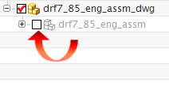

In the Assembly Navigator , select the drf7_85_eng_assm check box to load the assembly model into your session.

Note how model objects reappear in the pre-NX8.5 exact views.
 , select the drf7_85_eng_assm check box to load the assembly model into your session.
, select the drf7_85_eng_assm check box to load the assembly model into your session.